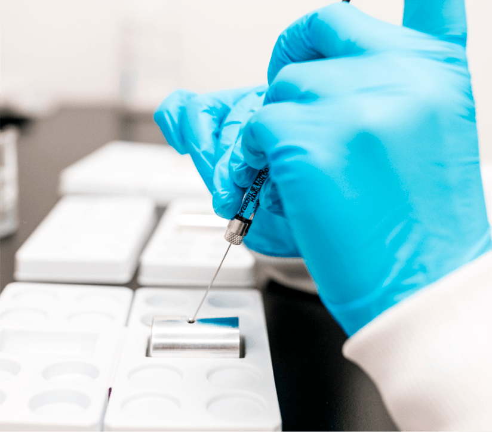

Process Development
The importance of strategic process development (PD) as a program advances cannot be overstated. It is critical to increasing yields, achieving product quality expectations, and lowering the cost of goods (COGS) while meeting clinical development milestones.
The Center for Breakthrough Medicines (CBM) has a Process Development team with unrivaled experience building and optimizing processes for commercial gene and cell therapies.
Strategic development drives flawless GMP execution
Developing Strategy
CBM begins with a knowledge transfer of your existing process, or the development of a de novo custom bioprocess from scratch. Our PD team then develops an optimal product strategy to align processes and equipment with future pilot scale and cGMP-scale operations.
Implementing Strategy
Our viral vector process solutions are fully scalable. All upstream processes are designed to meet safety, quality, and yield expectations and are scalable to phase-appropriate production volumes while maintaining critical quality attributes (CQAs) throughout the product lifecycle to commercialization.
Technology Transfer
Our PD and cGMP manufacturing teams closely collaborate and are cross-trained to ensure process performance and quality. CBM’s pilot plant operations support scale-up, scale-out, preclinical production, tech transfer, cGMP readiness, and training. From here, we seamlessly transfer your manufacturing process and scale up with pilot and training runs in one location to advance your project to cGMP production.
Learn about CBM’s Analytical Development & Testing >

Viral Vector Process Development
Upstream
- Suspension and adherent manufacturing platforms for Adeno-Associated Virus (AAV), Adenovirus, Lentivirus, and other novel viral vectors
- Research cell and virus banking (RCB & RVB)
- Process development, optimization, and characterization
- Process validation / BLA-enabling activities
- Pilot production to support IND-enabling studies
Downstream
- Viral vector purification capabilities across all processing steps: filtration, chromatography, and ultracentrifugation
- Process development, optimization, and characterization
- Process validation / BLA-enabling activities
- Pilot production to support IND-enabling studies
Drug Product & Analytics
- High-throughput formulation development
- Drug product process development and characterization
- Stability and force-degradation studies
- Pilot-scale drug product filling to enable tech transfer and support IND-enabling studies
- In-use stability and device compatibility studies
Cell Therapy Process Development
Drug Substance
- Process development and characterization for both autologous and allogenic products
- Process validation / BLA-enabling activities
- Pilot production to support IND-enabling studies
- Technology transfer / GMP readiness
Drug Substance
- Formulation development
- Formulation & fill process automation and closure
- Cryopreservation cycle development
- Container closure development
- In-use stability and device compatibility studies